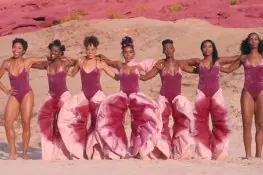
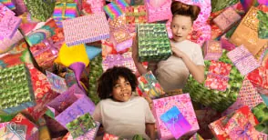
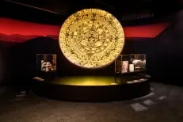
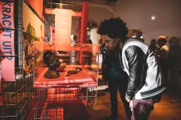

Nieuws ·
Nationaal Museum van Wereldculturen en Wereldmuseum openen vanaf 5 juni de deuren

Dit bericht uit ons archief verscheen op 1 juni 2021 op NieuwsNijmegen.nl. Data, tijden en prijzen kunnen inmiddels anders zijn.
31 mei 2021
Je blik op de wereld verbreden: het kan weer!
Ze zijn 5 juni open: Superstraat, What a Genderful World, Cadeau Hoezo, Healing Power, De Duisternis ontvluchten, Droomreis en de vele andere exposities op de verschillende locaties van het Nationaal Museum van Wereldculturen (NMVW) en het Wereldmuseum. Inhoudelijk directeur Wayne Modest: “Onze musea zijn er klaar voor. Het is geweldig dat we weer mogen inspireren. Met onze vaste presentaties en vele nieuwe exposities. Vol hedendaagse fotografie, ambacht, design en beeldende kunst.” Modest vervolgt: “Er is voldoende ruimte, zodat je heerlijk kunt dwalen. En wij zorgen ervoor dat je ons veilig kunt bezoeken.”
Museum Volkenkunde in Leiden, het Tropenmuseum in Amsterdam, het Afrika Museum in Berg en Dal en het Wereldmuseum in Rotterdam inspireren met programmering die laat zien hoe mensen op verschillende plekken in de wereld met universele vraagstukken omgaan: van uit de eigen cultureel context maar ook in relaties met anderen. En hoe we als mensen vorm en betekenis geven aan ons leven. Als ook hoe kolonialisme doorwerkt in de dag van vandaag. Daarbij geven de musea een bredere kijk op die wereld en zetten aan tot nadenken.
Zie hieronder voor het overzicht van nieuwe exposities. Wie de musea wil bezoeken, dient vooraf een ticket te reserveren. Kaartjes zijn via de sites van de musea te boeken: tropenmuseum.nl, volkenkunde.nl, afrikamuseum.nl, wereldmuseum.nl


Veel nieuwe exposities. Wat is waar te zien.
Tropenmuseum, Amsterdam www.tropenmuseum.nl
Nieuwe expositie: Cadeau, Hoezo?Cadeau, Hoezo? is een uitbundige en interactieve tentoonstelling waar je ziet hoe we wereldwijd cadeaus aan elkaar geven; en op hoe veel manieren we dat doen. Tussen mensen onderling, maar ook op politiek niveau. Waarom gaf Nederland ooit een stoomschip aan Japan? Wat vond Mao van de mango’s die hij ooit ontving? In de tentoonstelling zie je ook de honderden poppen die Juliana cadeau kreeg. En stap je in een enorme, Instagrammable installatie van furoshiki (Japans inpakdoek). Laat je inpakken door Cadeau, Hoezo?
Nieuwe expositie: De duisternis ontvluchtenDe duisternis ontvluchten is een expositie van Issam Kourbaj. De in Syrië geboren kunstenaar gebruikt zijn eigen werk en de collectie van het museum om te reflecteren op de crisis in Syrië. Het indrukwekkende kunstwerk Scaling the Dark: Seeds, Sands, Moons maakte Kourbaj speciaal voor de monumentale Lichthal in het museum. De installatie van 4348 miniatuurbootjes spreidt zich diagonaal uit door de ruimte en telt het aantal dagen, weken en maanden sinds het begin van de crisis in Syrië, die inmiddels al tien jaar duurt.
Nieuwe expositie: Healing PowerHealing Power toont de vele rituelen aan de hand van objecten uit Europa, Zuid-Amerika tot aan de Noordpoolgebieden. Zes verschillende ritueel specialisten nemen je mee in de verhalen achter de tradities. Diverse werken worden samengebracht met werk van kunstenaars als Damian Hirst, Marina Abramovic en Jorge Mañes Rubio, van amuletten, klankschalen en hypnotiserende trommels tot sjamanen, heksen en voodoopriesters. Healing Power geeft inzicht in verschillende vormen van helende kracht en toont de zoektocht van de moderne mens naar balans tussen lichaam, ziel en geest.
Verwacht 24 juni: Door de lens van In deze bijzondere tentoonstelling, in samenwerking met World Press Photo, is het werk van 17 fotografen te zien. De fotografen, afkomstig uit verschillende Afrikaanse landen, laten op hun eigen manier de diversiteit van het continent zien. Met verschillende thema’s waaronder wederopbouw, oorlog en gendergelijkheid toont de expositie het menselijke en nieuwsgierig makende verhaal van zowel de fotograaf als de gefotografeerde.
Museum Volkenkunde, Leiden www.volkenkunde.nl
Nieuwe expositie: Droomreis, borduurwerken van 180 schoolkinderen Bij Museum Volkenkunde kun je terecht voor een kleine expositie met verrassende, kleurrijke en originele kunstwerken, Droomreis. Het zijn de geborduurde verbeeldingen van droomreizen van 180 kinderen. De makers zijn leerlingen van drie basisscholen: De Pionier en De Lorentzschool uit Leiden en de Koningin Julianaschool uit Leiderdorp. Reizen in de tijd, de ruimte en door de wereld: alles is mogelijk. Door corona en de noodzaak thuis te blijven hebben deze werken natuurlijk een extra betekenis gekregen.
Verwacht 6 aug: Azteken
Dé internationale familie-expo van 2021: Azteken
Eén van de iconische beschavingen uit de wereldgeschiedenis. Bouwers van kolossale piramides en een rijk dat grote delen van Midden-Amerika omvatte. Aanleiding voor deze internationale expositie is het feit dat precies 500 jaar geleden dit rijk werd vernietigd door enkele honderden Spaanse kolonisten en hun inheemse geallieerden. Dankzij een unieke samenwerking met diverse internationale musea en actuele kennis biedt de tentoonstelling behalve de nieuwste inzichten ook intrigerende topstukken. Vele daarvan zijn nog nooit eerder buiten Mexico te zien geweest. Speciaal voor families is er een interactieve route door de tentoonstelling. Daarnaast kun je dagelijks in het Azteken atelier terecht voor creatieve opdrachten. Ook tijdens schoolvakanties en op zondagen is er van alles te doen rondom het thema Azteken.
Afrika Museum, Berg en Dal www.afrikamuseum.nl
Bitter Chocolate StoriesZes kinderen vertellen in Bitter Chocolate Stories hun verhaal. Zij zorgen ervoor dat wij, de chocoladeconsumenten, duizenden kilometers verderop de chocola kunnen eten waar we zo van houden. Ze nemen je mee naar de cacaoplantages en vertellen hun verhalen en die van hun ouders, van de cacaoboeren, en de mensen die zich inzetten om kinderarbeid te stoppen. Deze tentoonstelling is i.s.m. Tony Chocolonely.
Verwacht 17 juni: Heden van het Slavernijverleden
De expositie Heden van het Slavernijverleden opende in 2017 in Tropenmuseum. Nu reist deze expo over de actuele erfenissen van slavernij en kolonialisme in Nederland naar het Afrika Museum. Daar is ze vanaf juni te zien. Een formele opening volgt in oktober; in de zomermaanden krijgt de expo een actualisatie naar het heden. De expo wordt ook aangevuld met het Gelderse koloniale verhaal.
Wereldmuseum, Rotterdam www.wereldmuseum.nl
Nieuwe expositie: What a Genderful WorldMaak in What a Genderful Worldkennis met genderstereotypen, zelfexpressie en empowerment wereldwijd. Op Fiji dragen politieagenten een rok. Roze is pas sinds de jaren vijftig in het Westen een meisjeskleur. En hij en zij bestaan niet in de Turkse taal. Maak je eigen fotoshoot met ‘typisch mannelijke of vrouwelijke’ poses en ervaar het zelf. What a Genderful World dompelt je onder in het diverse spectrum van gender.

Foto boven: Vaginabroek, te zien in What a Genderful World.
Foto onder: Sfeerbeeld expositie Heden van het Slavernijverleden die van Tropenmuseum naar Afrika Museum reist.